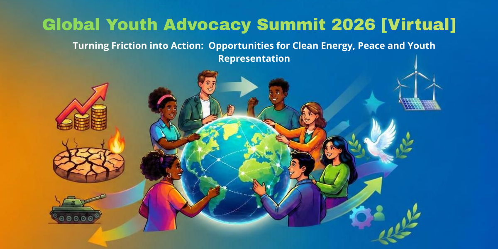

31
Jul
Global Youth Advocacy Summit 2026 [Virtual]
The Global Youth Advocacy Summit 2026 aims at turning friction into Action: Opportunities for Clean Energy, Peace, and Youth Representation.
The world is at a critical turning point. The ongoing geopolitical crisis in the Strait of Hormuz has sent shockwaves across the globe—disrupting energy supplies, escalating conflicts, and driving up the cost of living. While these intersecting crises expose the deep vulnerabilities of our current global systems, they also present a historic window of opportunity. We cannot afford to solely rely on previous generations to give us a seat at the table; we must use this opportunity to take matters into our own hands.
The Global Youth Advocacy Network cordially invites you to be one of 60 selected global youth leaders at the Global Youth Advocacy Summit 2026 [Virtual] on Saturday, 1 August 2026.
Through this virtual summit, we aim to transform urgent global macro-crises into a definitive turning point for grassroots action. This three hour summit is intentionally action-oriented. The first half will equip you with sharp, hard-hitting insights from world-class experts. The second half belongs entirely to you: an interactive Action Lab where you will build a tangible action roadmap and co-author an official global declaration.
Our insights and policy recommendations will directly feed into the upcoming Global Youth Advocacy Summit 2026 Communiqué to be disseminated to global actors and partners in Colombia this December.
Summit Overview
- Date: Saturday, 1 August 2026
- Time: 11:45 – 14:30 UTC (Please check your local time zone)
- Venue: Online via Zoom Meetings
- Organizers: Global Youth Advocacy Network Core Team
Summit Program (Tentative)
1. Opening Brief
An overview outlining the legacy of the Global Youth Advocacy Campaign, the critical mandates of the Tokyo 2025 Communiqué, and our collective summit intent.
2. Expert Speaker Input
Three world-class speakers deliver hard-hitting briefings, each tackling one of our core tracking questions:
- 💡The Energy Pivot: How can youth trigger a rapid just transition to renewable energy by leveraging the economic pressures of the Strait of Hormuz Crisis?
- 🕊Architects of Peace: How can young people, who are disproportionately affected by war and displacement, take the front seat in peace initiatives?
- 💪Movement Resilience: How can youth advocates financially survive the cost-of-living crisis and sustain their grassroots movements during economic hardship?
3. The Breakout Action Labs
Delegates split into specialized, facilitator-led rooms to translate expert insights into localized, actionable blueprints:
-
💡Action Lab 1: Driving the Just Energy Transition
Objective: Translate the macroeconomic pressures of the Hormuz energy crisis into clean-energy advocacy, and fossil-fuel divestment strategies that leaves no-one behind. -
🕊Action Lab 2: Youth-Led Peace & Security Blueprints
Objective: Map out community-level intervention strategies for conflict prevention and resolution, digital peacebuilding campaigns, and cross-border youth solidarity -
💪Action Lab 3: Implementing Financial Frameworks for Youth Initiatives
Objective: Build mutual-aid frameworks, funds and grants, sharing best practices, and agile, low-cost advocacy models designed to withstand global inflation.
4. Closing
Next steps communication, digital commitment forms, and final closing remarks.
5🗣Speaker Information
Speaker 1: Denise Ayebare
Denise Ayebare is a Ugandan climate and youth development leader, founder of BetterLife International, and a member of the Forbes Africa 30 Under 30 Class of 2026. With over eight years of experience in climate action, youth leadership, peacebuilding and community development, Denise has dedicated her career to advancing locally led solutions that strengthen resilience and create opportunities for vulnerable communities across Africa.
Speaker 2: Gerald John (JG) Guillermo
Gerald John (GJ) C. Guillermo is a development lawyer, researcher, and public policy advocate whose work spans government, diplomacy, academia, and civil society. He currently serves as a Policy Associate at ImagineLaw, where he contributes to evidence-based policy initiatives advancing public health, governance, and social welfare.
Expected Outcomes
- Tangible Youth-Led Actions: Generation of concrete action points, local initiatives, and practical solutions driven by delegates to address the three key topics.
- Direct Communiqué Contributions: The ideas, strategies, and content generated during the Action Labs will serve as the primary foundational material to help formulate the Global Youth Advocacy Summit 2026 Communiqué in Colombia.
👥 About the Organizers
Brought together through the Japan Youth Council, we are an international coalition of youth leaders, organizers, and advocates driving policy evolution across continents. Our movement is rooted in the Global Youth Advocacy Campaign—a coordinated initiative launched to enforce the UN’s "Pact for the Future" (Actions 36 and 37) for meaningful youth participation.
With only four years remaining to achieve the UN 2030 Agenda, decisions made today will directly determine our tomorrow. Building on the structural momentum of the Democracy Youth Summit 2025 in Tokyo, we bridge the gap between grassroots realities and global governance, empowering young leaders to be authoritative partners in designing the inclusive, just, and resilient democratic futures we deserve.